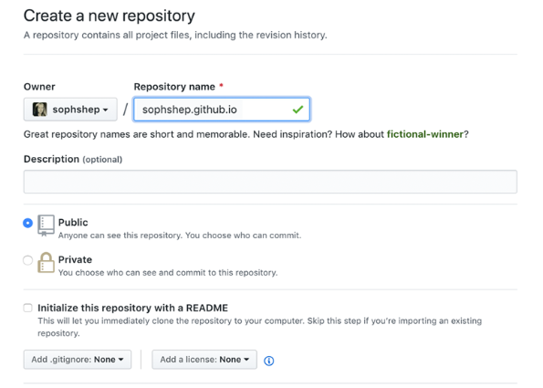
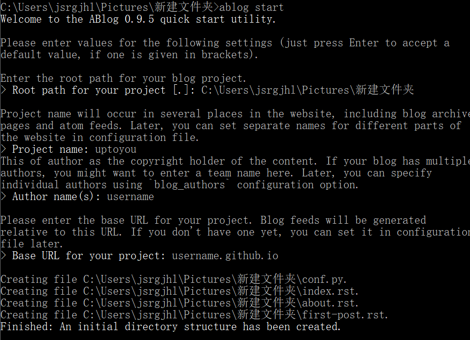
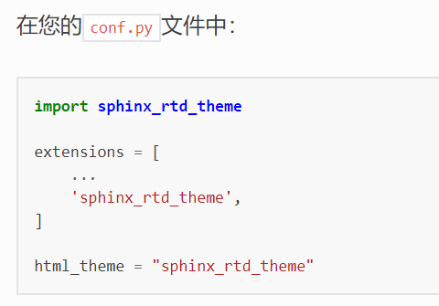
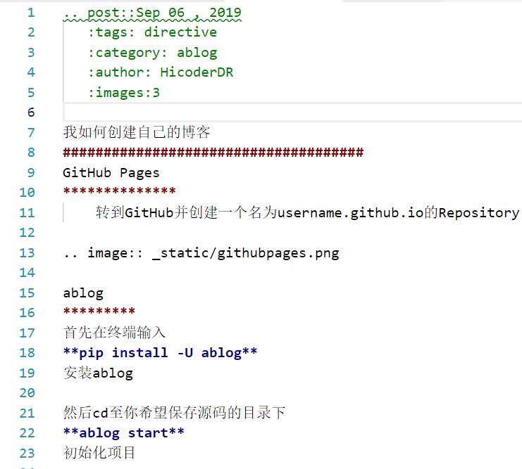
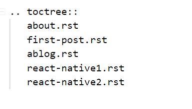

我如何创建自己的博客¶
GitHub Pages¶
转到GitHub并创建一个名为username.github.io的Repository，其中username是GitHub上的用户名
ablog¶
首先在终端输入 pip install -U ablog 安装ablog
然后cd至你希望保存源码的目录下 ablog start 初始化项目
你需要键入几项初始信息，如下
在此之后 ablog build 完成构建
ablog serve 在本地预览博客
最后使用 ablog deploy -g username 将博客更新至github上
至此初始博客已经被推送到username.github.io上了
如何更改博客的主题¶
安装第三方主题
很多第三方主题可以在PyPI, GitHub and sphinx-themes.org上找到
在此以我使用的sphinx_rtd_themew为例
首先 pip install sphinx_rtd_theme
然后
- 此外推荐一些其他可行的主题：
- 有两个漂亮，干净的主题，用于许多流行（和好看）的项目。是一个针对apidoc生成的文档的可读性进行了优化的主题。是另一种干净主题的尝试。
如何发布自己的贴子¶
新建xxx.rst文件
首先必须申明..post的时间和作者
然后根据特殊需要添加参数，比如给文章添加Tag(标记)，category(分类) ……详见官方文档
将其添加在index.rst的toctree中
ablog常用指令¶
ablog start 初始化ablog
ablog build 构建ablog
ablog serve 本地预览ablog
ablog deploy -g username 将博客同步到github
ablog clean -D 清楚build文件